This exercise uses translations and rotations to estimate ground motion variability from different sources. We begin by selecting a subset of similar ruptures which match a set of criteria (in this case, M7.6, Vertical Strike-Slip with Surface Rupture). Each rupture is then reoriented such that its strike (following the Aki & Richards 1980 convention) is 0 degrees (due North, dipping to the right for normal or reverse ruptures). For each site, ruptures are translated such that their scalar seismic moment centroid is directly North of the site, and their 3-dimensional distance (Rrup) is as specified (we consider 3 distance[s] here).
We then perform various rotations. We rotate the rupture in place around its centroid, holding the site-to-source centroid path and Rrup constant (henceforth 'Rupture Strike'). We also rotate ruptures around the site, holding Rrup and source orientation relative to the site constant but sampling different various paths (henceforth 'Path'). We do this for each unique combination of Rupture Strike, Path, Distance, Site, and Rupture.
NOTE: This page uses the SCEC BBP to simulate a 1-dimensional velocity structure. Thus we expect no path variability, and plots of path variabilitiy are included only as verification of the method.
| Quantity | Variations | Description |
|---|---|---|
| Rupture | 400 | Unique (but similar in faulting style and magnitude) ruptures which match the given scenario. |
| Site | 1 | Unique site locations. If 3-d, each will have unique velocity profiles. |
| Rupture Strike | 18 | Rupture strike conforming to the Aki & Richards (1980) convention, where dipping faults dip to the right of the rupture. If path rotation is also performed, this azimuth is relative to the path. |
| Path | 1 | Path from the site to the centroid of the rupture, in azimuthal degrees (0 is North) |
| Distance | 20.0, 50.0, 100.0 km | 3-dimensional distance between the site and the rupture surface. |
| Total # Simulations | 21600 | Total number of combinations of the above. |
We condisder 400 events which match the following criteria:
This tables gives a list of all fault sections which participate in the ruptures matching the above criteria. Many ruptures include multiple sections, so the sum of counts may be larger than the number of events.
| Section Name | Participation Count |
|---|---|
| San Jacinto (Clark) rev | 144 |
| San Jacinto (Stepovers Combined) | 144 |
| San Jacinto (Anza) rev | 144 |
| San Jacinto (San Jacinto Valley) rev | 132 |
| San Jacinto (San Bernardino) | 127 |
| San Andreas (Parkfield) | 75 |
| San Andreas (Cholame) rev | 75 |
| San Andreas (Creeping Section) 2011 CFM | 72 |
| San Jacinto (Lytle Creek connector) | 66 |
| Mendocino | 62 |
| San Andreas (Carrizo) rev | 54 |
| Coronado Bank alt1 | 33 |
| Death Valley (No) | 25 |
| Helendale-So Lockhart | 19 |
| San Andreas (Mojave S) | 14 |
| San Andreas (San Bernardino N) | 14 |
| San Andreas (North Coast) 2011 CFM | 9 |
| San Andreas (Offshore) 2011 CFM | 8 |
| Garlock (West) | 8 |
| San Andreas (Mojave N) | 5 |
| San Juan | 5 |
| Calico-Hidalgo | 3 |
| San Diego Trough south | 2 |
| San Gregorio (North) 2011 CFM | 2 |
| San Diego Trough north alt1 | 2 |
| Hunting Creek - Bartlett Springs connector 2011 | 1 |
| Gravel Hills-Harper Lk | 1 |
| Likely 2011 CFM | 1 |
| San Jacinto (Coyote Creek) | 1 |
| Bartlett Springs 2011 CFM | 1 |
| Camp Rock 2011 | 1 |
| TOTAL # PARENTS | 1250 |
Actual magnitude range: [7.5500703,7.6498375], average: 7.597783, stdDev: 0.02949116
| Name | Location | Vs30 (m/s) | Z1.0 (km) | Z2.5 (km) |
|---|---|---|---|---|
| USC | 34.0192, -118.286 | 500 | N/A | N/A |
| Type | Notation | Distance | T-independent Std. Dev. | 3s Std. Dev. | 5s Std. Dev. | 7.5s Std. Dev. | 10s Std. Dev. |
|---|---|---|---|---|---|---|---|
| Source-strike | φs | 20 km | 0.39 | 0.46 | 0.46 | 0.35 | 0.3 |
| Source-strike | φs | 50 km | 0.49 | 0.52 | 0.61 | 0.5 | 0.46 |
| Source-strike | φs | 100 km | 0.5 | 0.42 | 0.62 | 0.58 | 0.54 |
| Source-strike | φs | (all) | 0.47 | 0.47 | 0.57 | 0.49 | 0.44 |
| Within-event, single-site | φSS | 20 km | 0.39 | 0.46 | 0.46 | 0.35 | 0.3 |
| Within-event, single-site | φSS | 50 km | 0.49 | 0.52 | 0.61 | 0.5 | 0.46 |
| Within-event, single-site | φSS | 100 km | 0.5 | 0.42 | 0.62 | 0.58 | 0.54 |
| Within-event, single-site | φSS | (all) | 0.47 | 0.47 | 0.57 | 0.49 | 0.44 |
| Between-events | τ | 20 km | 0.15 | 0.12 | 0.17 | 0.19 | 0.2 |
| Between-events | τ | 50 km | 0.16 | 0.16 | 0.2 | 0.2 | 0.21 |
| Between-events | τ | 100 km | 0.16 | 0.12 | 0.18 | 0.23 | 0.23 |
| Between-events | τ | (all) | 0.16 | 0.14 | 0.18 | 0.21 | 0.21 |
| Type | Notation | Distance | ASK2014 3s | ASK2014 5s | ASK2014 7.5s | ASK2014 10s | BSSA2014 3s | BSSA2014 5s | BSSA2014 7.5s | BSSA2014 10s | CB2014 3s | CB2014 5s | CB2014 7.5s | CB2014 10s | CY2014 3s | CY2014 5s | CY2014 7.5s | CY2014 10s |
|---|---|---|---|---|---|---|---|---|---|---|---|---|---|---|---|---|---|---|
| Source-strike | φSS | 20 km | 0.55 | 0.58 | 0.57 | 0.55 | 0.55 | 0.54 | 0.54 | 0.54 | 0.55 | 0.51 | 0.49 | 0.47 | 0.52 | 0.53 | 0.52 | 0.51 |
| Source-strike | φSS | 50 km | 0.55 | 0.58 | 0.57 | 0.55 | 0.55 | 0.54 | 0.54 | 0.54 | 0.55 | 0.51 | 0.49 | 0.47 | 0.53 | 0.53 | 0.52 | 0.51 |
| Source-strike | φSS | 100 km | 0.55 | 0.58 | 0.57 | 0.55 | 0.55 | 0.54 | 0.54 | 0.54 | 0.55 | 0.51 | 0.49 | 0.47 | 0.53 | 0.53 | 0.52 | 0.51 |
| Within-event, single-site | φSS | 20 km | 0.55 | 0.58 | 0.57 | 0.55 | 0.55 | 0.54 | 0.54 | 0.54 | 0.55 | 0.51 | 0.49 | 0.47 | 0.52 | 0.53 | 0.52 | 0.51 |
| Within-event, single-site | φSS | 50 km | 0.55 | 0.58 | 0.57 | 0.55 | 0.55 | 0.54 | 0.54 | 0.54 | 0.55 | 0.51 | 0.49 | 0.47 | 0.53 | 0.53 | 0.52 | 0.51 |
| Within-event, single-site | φSS | 100 km | 0.55 | 0.58 | 0.57 | 0.55 | 0.55 | 0.54 | 0.54 | 0.54 | 0.55 | 0.51 | 0.49 | 0.47 | 0.53 | 0.53 | 0.52 | 0.51 |
| Between-events | τ | 20 km | 0.36 | 0.36 | 0.36 | 0.36 | 0.3 | 0.33 | 0.34 | 0.35 | 0.35 | 0.4 | 0.42 | 0.39 | 0.32 | 0.33 | 0.34 | 0.34 |
| Between-events | τ | 50 km | 0.36 | 0.36 | 0.36 | 0.36 | 0.3 | 0.33 | 0.34 | 0.35 | 0.35 | 0.4 | 0.42 | 0.39 | 0.33 | 0.33 | 0.34 | 0.34 |
| Between-events | τ | 100 km | 0.36 | 0.36 | 0.36 | 0.36 | 0.3 | 0.33 | 0.34 | 0.35 | 0.35 | 0.4 | 0.42 | 0.39 | 0.33 | 0.33 | 0.34 | 0.34 |
| φs | |
|---|---|
| φSS | |
| τ | |
Source-strike variability, denoted φs in Aki & Richards (1980), is computed separately for each:
Then, for each unique combination of:
we compute residuals, δWes, of the natural-log ground motions (relative to the median), computed across all 18 combinations of:
We take φs to be the standard deviation of all residuals, δWes, across each combination of Rupture, Path.
We also compute distance-independent φs, which is computed as the standard deviation of all residuals, δWes, across all distances. Each residual is still computed relative to the log-median ground motion at it's distance.
Here is an exmample with 5 rotations, which would be repeated for each combination of [Rupture, Path]. The site is shown with a blue square, and initially oriented rupture in bold with its hypocenter as a red star and centroid a green circle. Rotations of that rupture are in gray:


| 3s φs | Total | Mean | Median | Range | 5s φs | Total | Mean | Median | Range | 7.5s φs | Total | Mean | Median | Range | 10s φs | Total | Mean | Median | Range |
|---|---|---|---|---|---|---|---|---|---|---|---|---|---|---|---|---|---|---|---|
| 0.46 | 0.46 | 0.46 | [0.25 0.7] | 0.46 | 0.45 | 0.45 | [0.2 0.8] | 0.35 | 0.34 | 0.34 | [0.14 0.67] | 0.3 | 0.29 | 0.29 | [0.11 0.5] |
Here are plots of the histogram of φs for each individual rupture, from which we compute a total φs
| 3s | 5s |
|---|---|
 | 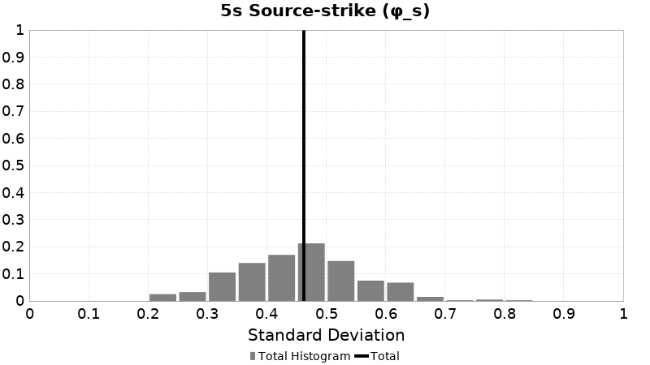 |
| 7.5s | 10s |
| 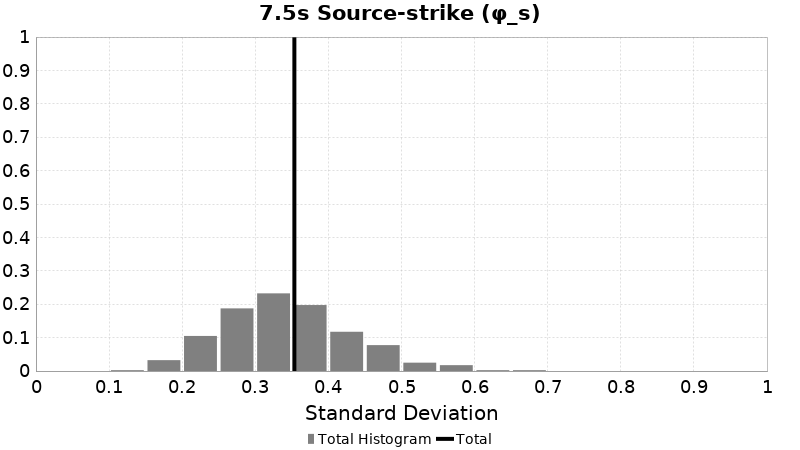 |  |

| 3s φs | Total | Mean | Median | Range | 5s φs | Total | Mean | Median | Range | 7.5s φs | Total | Mean | Median | Range | 10s φs | Total | Mean | Median | Range |
|---|---|---|---|---|---|---|---|---|---|---|---|---|---|---|---|---|---|---|---|
| 0.52 | 0.52 | 0.52 | [0.3 0.7] | 0.61 | 0.6 | 0.6 | [0.33 0.94] | 0.5 | 0.49 | 0.49 | [0.28 0.87] | 0.46 | 0.45 | 0.45 | [0.26 0.7] |
Here are plots of the histogram of φs for each individual rupture, from which we compute a total φs
| 3s | 5s |
|---|---|
| 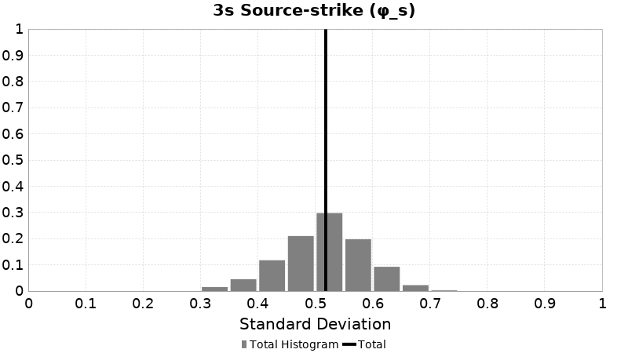 |  |
| 7.5s | 10s |
 | 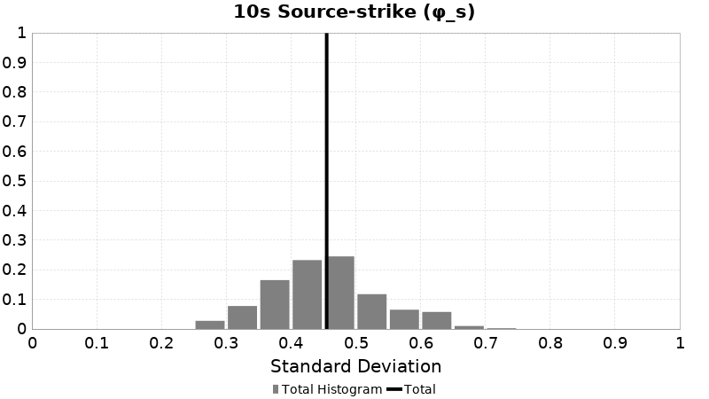 |
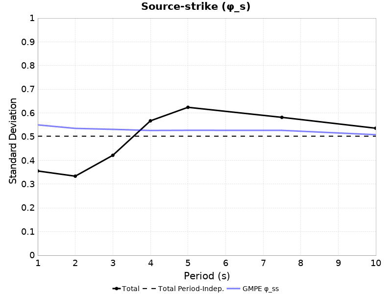
| 3s φs | Total | Mean | Median | Range | 5s φs | Total | Mean | Median | Range | 7.5s φs | Total | Mean | Median | Range | 10s φs | Total | Mean | Median | Range |
|---|---|---|---|---|---|---|---|---|---|---|---|---|---|---|---|---|---|---|---|
| 0.42 | 0.42 | 0.41 | [0.2 0.67] | 0.62 | 0.62 | 0.63 | [0.36 0.94] | 0.58 | 0.58 | 0.58 | [0.32 0.88] | 0.54 | 0.53 | 0.53 | [0.3 0.78] |
Here are plots of the histogram of φs for each individual rupture, from which we compute a total φs
| 3s | 5s |
|---|---|
 | 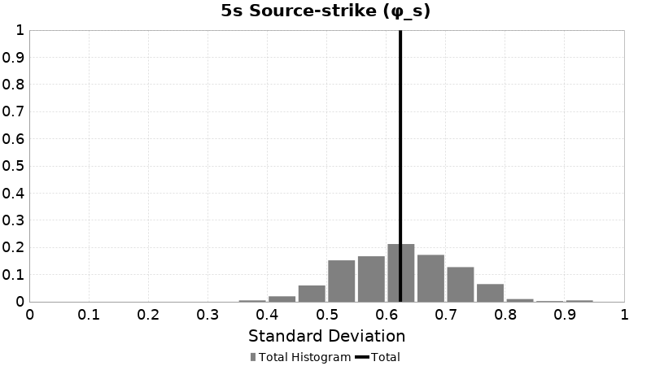 |
| 7.5s | 10s |
 | 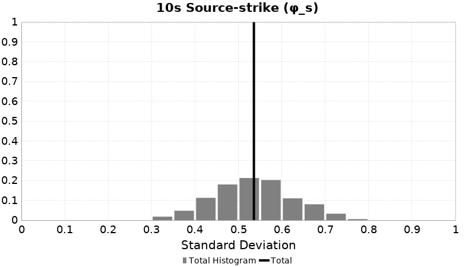 |
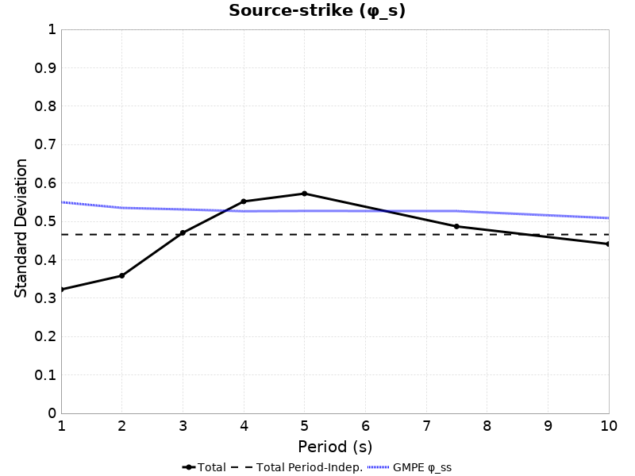
| 3s φs | Total | Mean | Median | Range | 5s φs | Total | Mean | Median | Range | 7.5s φs | Total | Mean | Median | Range | 10s φs | Total | Mean | Median | Range |
|---|---|---|---|---|---|---|---|---|---|---|---|---|---|---|---|---|---|---|---|
| 0.47 | 0.46 | 0.46 | [0.2 0.7] | 0.57 | 0.56 | 0.57 | [0.2 0.94] | 0.49 | 0.47 | 0.47 | [0.14 0.88] | 0.44 | 0.43 | 0.43 | [0.11 0.78] |
Here are plots of the histogram of φs for each individual rupture, from which we compute a total φs
| 3s | 5s |
|---|---|
| 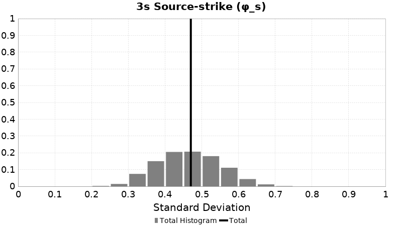 | 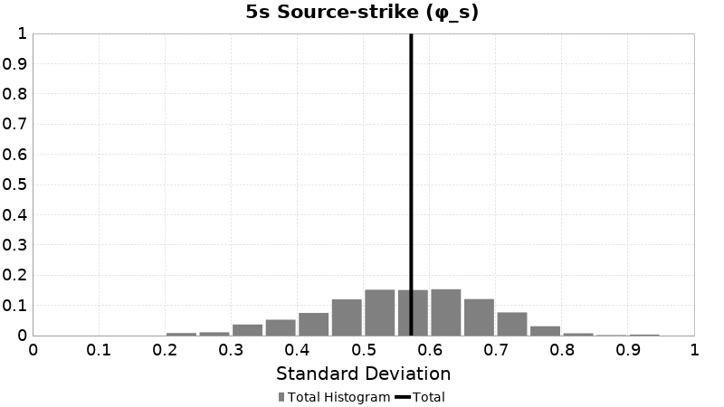 |
| 7.5s | 10s |
 | 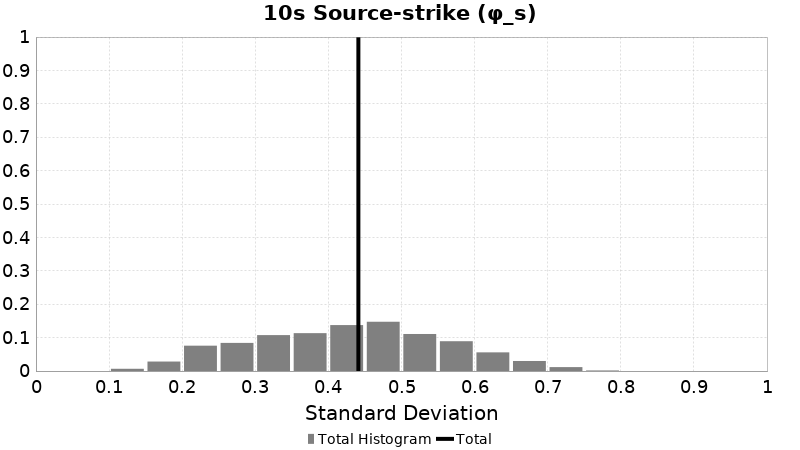 |
Within-event, single-site variability, denoted φSS in Al Atik (2010), is computed separately for each:
Then, for each unique combination of:
we compute residuals, δWes, of the natural-log ground motions (relative to the median), computed across all 18 combinations of:
We take φSS to be the standard deviation of all residuals, δWes, across each combination of Rupture.
We also compute distance-independent φSS, which is computed as the standard deviation of all residuals, δWes, across all distances. Each residual is still computed relative to the log-median ground motion at it's distance.
Here is an exmample with 5 rotations, which would be repeated for each combination of [Rupture]. The site is shown with a blue square, and initially oriented rupture in bold with its hypocenter as a red star and centroid a green circle. Rotations of that rupture are in gray:


| 3s φSS | Total | Mean | Median | Range | 5s φSS | Total | Mean | Median | Range | 7.5s φSS | Total | Mean | Median | Range | 10s φSS | Total | Mean | Median | Range |
|---|---|---|---|---|---|---|---|---|---|---|---|---|---|---|---|---|---|---|---|
| 0.46 | 0.46 | 0.46 | [0.25 0.7] | 0.46 | 0.45 | 0.45 | [0.2 0.8] | 0.35 | 0.34 | 0.34 | [0.14 0.67] | 0.3 | 0.29 | 0.29 | [0.11 0.5] |
Here are plots of the histogram of φSS for each individual rupture, from which we compute a total φSS
| 3s | 5s |
|---|---|
| 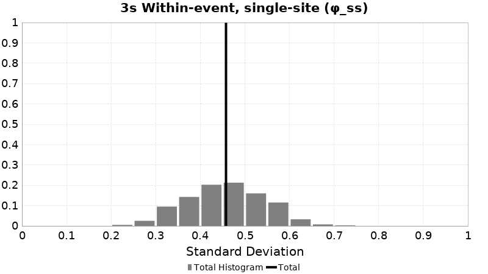 |  |
| 7.5s | 10s |
| 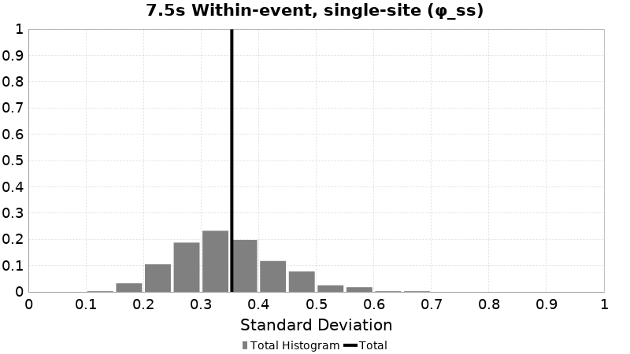 |  |
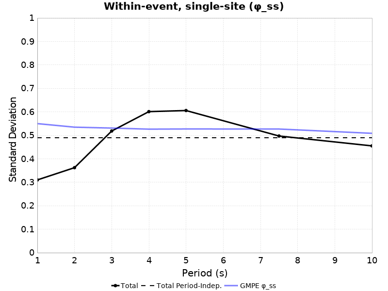
| 3s φSS | Total | Mean | Median | Range | 5s φSS | Total | Mean | Median | Range | 7.5s φSS | Total | Mean | Median | Range | 10s φSS | Total | Mean | Median | Range |
|---|---|---|---|---|---|---|---|---|---|---|---|---|---|---|---|---|---|---|---|
| 0.52 | 0.52 | 0.52 | [0.3 0.7] | 0.61 | 0.6 | 0.6 | [0.33 0.94] | 0.5 | 0.49 | 0.49 | [0.28 0.87] | 0.46 | 0.45 | 0.45 | [0.26 0.7] |
Here are plots of the histogram of φSS for each individual rupture, from which we compute a total φSS
| 3s | 5s |
|---|---|
| 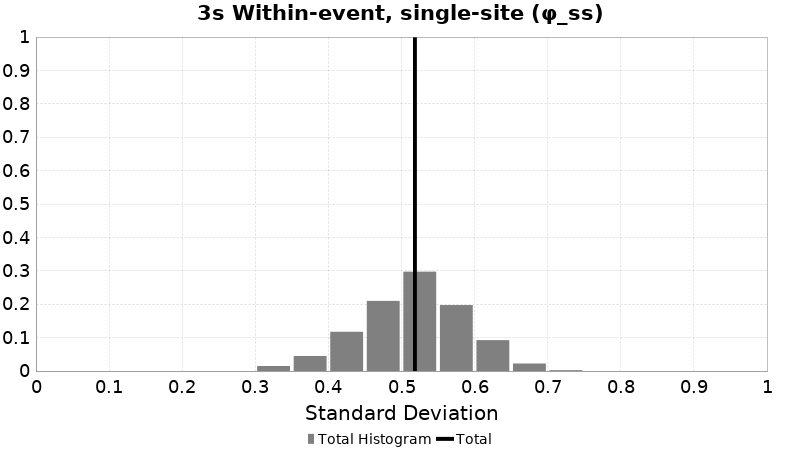 | 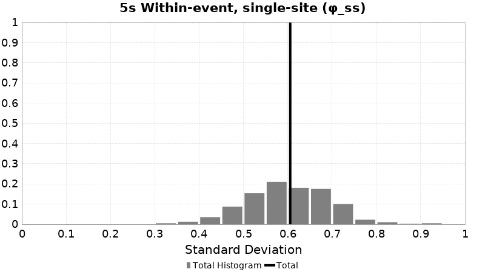 |
| 7.5s | 10s |
| 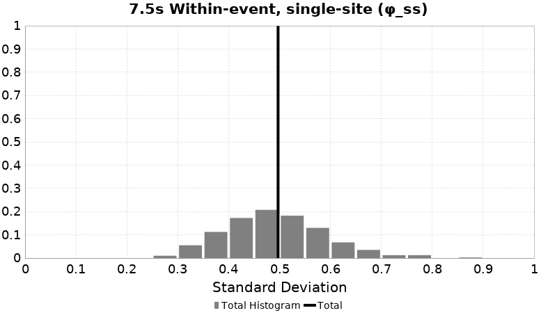 | 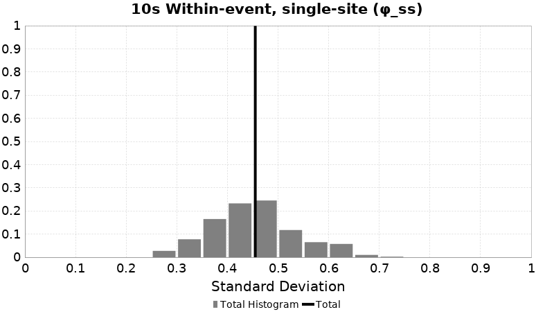 |

| 3s φSS | Total | Mean | Median | Range | 5s φSS | Total | Mean | Median | Range | 7.5s φSS | Total | Mean | Median | Range | 10s φSS | Total | Mean | Median | Range |
|---|---|---|---|---|---|---|---|---|---|---|---|---|---|---|---|---|---|---|---|
| 0.42 | 0.42 | 0.41 | [0.2 0.67] | 0.62 | 0.62 | 0.63 | [0.36 0.94] | 0.58 | 0.58 | 0.58 | [0.32 0.88] | 0.54 | 0.53 | 0.53 | [0.3 0.78] |
Here are plots of the histogram of φSS for each individual rupture, from which we compute a total φSS
| 3s | 5s |
|---|---|
 |  |
| 7.5s | 10s |
 | 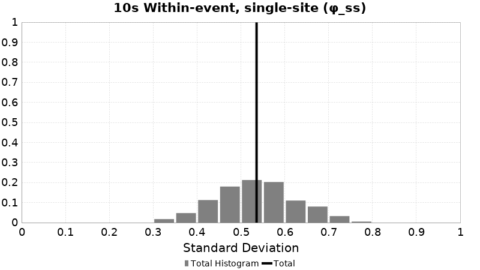 |

| 3s φSS | Total | Mean | Median | Range | 5s φSS | Total | Mean | Median | Range | 7.5s φSS | Total | Mean | Median | Range | 10s φSS | Total | Mean | Median | Range |
|---|---|---|---|---|---|---|---|---|---|---|---|---|---|---|---|---|---|---|---|
| 0.47 | 0.46 | 0.46 | [0.2 0.7] | 0.57 | 0.56 | 0.57 | [0.2 0.94] | 0.49 | 0.47 | 0.47 | [0.14 0.88] | 0.44 | 0.43 | 0.43 | [0.11 0.78] |
Here are plots of the histogram of φSS for each individual rupture, from which we compute a total φSS
| 3s | 5s |
|---|---|
| 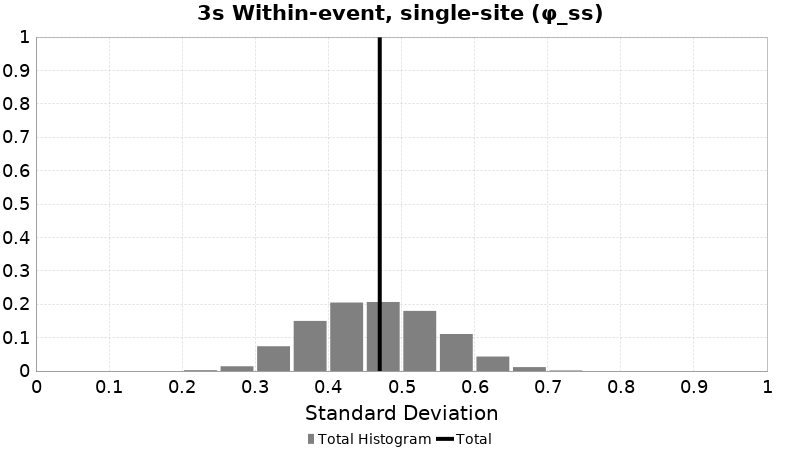 | 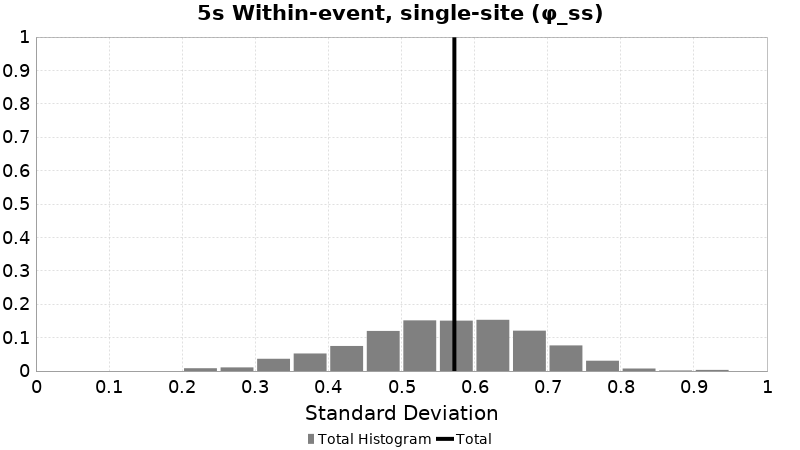 |
| 7.5s | 10s |
| 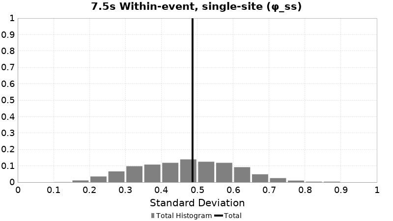 |  |
Between-events variability, denoted τ in Al Atik (2010), is computed separately for each:
We first compute the median natural-log ground motion, δBe, for each combination of:
That median, δBe, is computed across all 18 combinations of:
We take τ to be the standard deviation of all δBe.
We also compute distance-independent τ, which we take to be the mean value across all distances.
Here is an exmample with 5 rotations, which would be repeated for each combination of [Rupture]. The site is shown with a blue square, and initially oriented rupture in bold with its hypocenter as a red star and centroid a green circle. Rotations of that rupture are in gray:

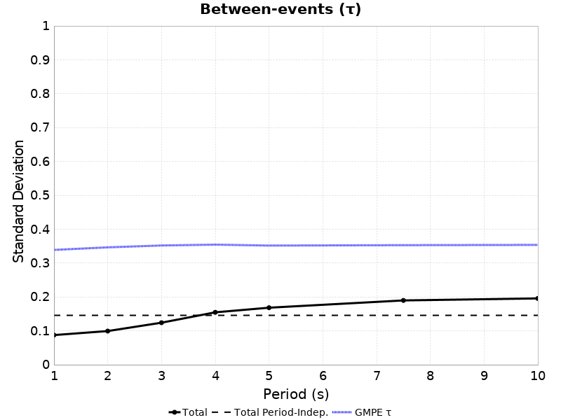
| 3s τ | Mean δBe | δBe Range | 5s τ | Mean δBe | δBe Range | 7.5s τ | Mean δBe | δBe Range | 10s τ | Mean δBe | δBe Range |
|---|---|---|---|---|---|---|---|---|---|---|---|
| 0.12 | -2.21 | [-2.68 -1.89] | 0.17 | -3.08 | [-3.53 -2.54] | 0.19 | -3.85 | [-4.34 -3.32] | 0.2 | -4.45 | [-4.92 -3.86] |

| 3s τ | Mean δBe | δBe Range | 5s τ | Mean δBe | δBe Range | 7.5s τ | Mean δBe | δBe Range | 10s τ | Mean δBe | δBe Range |
|---|---|---|---|---|---|---|---|---|---|---|---|
| 0.16 | -3.13 | [-3.73 -2.72] | 0.2 | -3.77 | [-4.43 -3.19] | 0.2 | -4.38 | [-4.97 -3.74] | 0.21 | -4.89 | [-5.46 -4.22] |

| 3s τ | Mean δBe | δBe Range | 5s τ | Mean δBe | δBe Range | 7.5s τ | Mean δBe | δBe Range | 10s τ | Mean δBe | δBe Range |
|---|---|---|---|---|---|---|---|---|---|---|---|
| 0.12 | -3.86 | [-4.17 -3.43] | 0.18 | -4.56 | [-5 -3.94] | 0.23 | -4.93 | [-5.5 -4.21] | 0.23 | -5.36 | [-5.97 -4.68] |
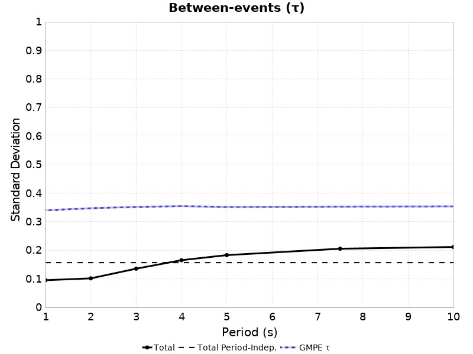
| 3s τ | Mean δBe | δBe Range | 5s τ | Mean δBe | δBe Range | 7.5s τ | Mean δBe | δBe Range | 10s τ | Mean δBe | δBe Range |
|---|---|---|---|---|---|---|---|---|---|---|---|
| 0.14 | -3.07 | [-4.17 -1.89] | 0.18 | -3.8 | [-5 -2.54] | 0.21 | -4.39 | [-5.5 -3.32] | 0.21 | -4.9 | [-5.97 -3.86] |
| 3 s | 5 s | 7.5 s | 10 s | |
|---|---|---|---|---|
| 20 km | ||||
| 50 km | ||||
| 100 km |  |
| 3 s | 5 s | 7.5 s | 10 s | |
|---|---|---|---|---|
| 20 km |  | |||
| 50 km | ||||
| 100 km |
| 3 s | 5 s | 7.5 s | 10 s | |
|---|---|---|---|---|
| 20 km | ||||
| 50 km | ||||
| 100 km |
| 3 s | 5 s | 7.5 s | 10 s | |
|---|---|---|---|---|
| 20 km |  | |||
| 50 km | ||||
| 100 km |
| 3 s | 5 s | 7.5 s | 10 s | |
|---|---|---|---|---|
| 20 km |  | |||
| 50 km | ||||
| 100 km |  |  |
| 3 s | 5 s | 7.5 s | 10 s | |
|---|---|---|---|---|
| 20 km | ||||
| 50 km | 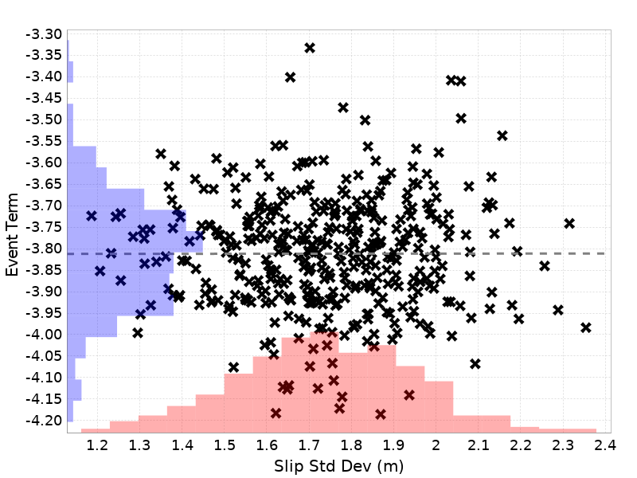 | |||
| 100 km |
| 3 s | 5 s | 7.5 s | 10 s | |
|---|---|---|---|---|
| 20 km | ||||
| 50 km | ||||
| 100 km |
Directivity comparisons for individual ruptures can be found here.
| 3 s | 5 s | 7.5 s | 10 s | |
|---|---|---|---|---|
| 20 km | ||||
| 50 km | 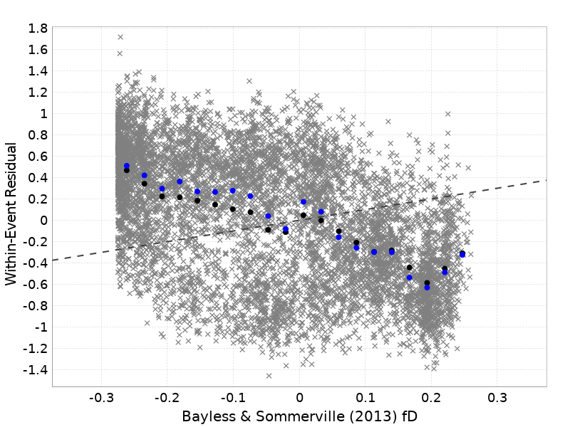 | |||
| 100 km | 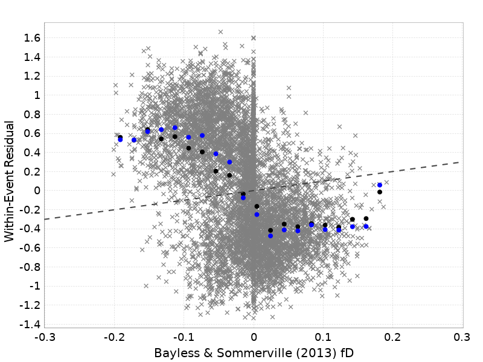 |  |
| Type | 3s | 5s | 7.5s | 10s |
|---|---|---|---|---|
| τ | 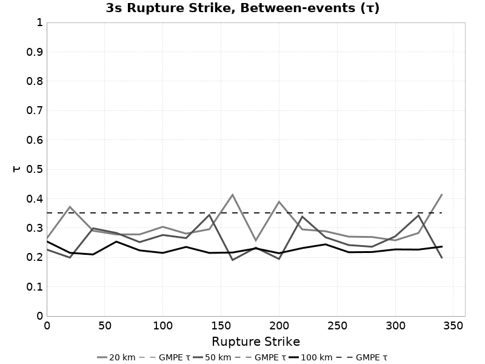 | 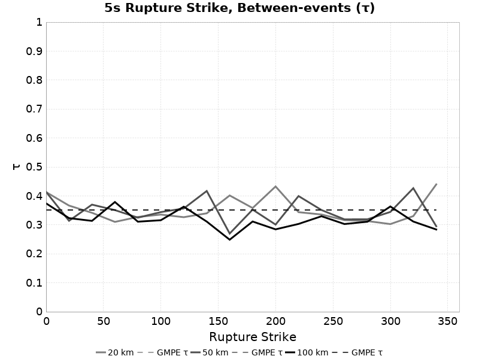 |  | 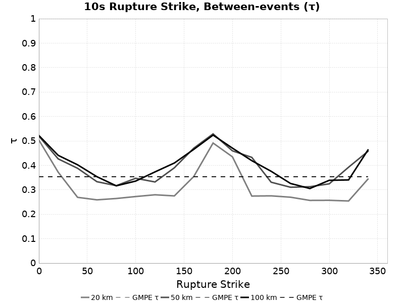 |
| Median SA |  |  |  | 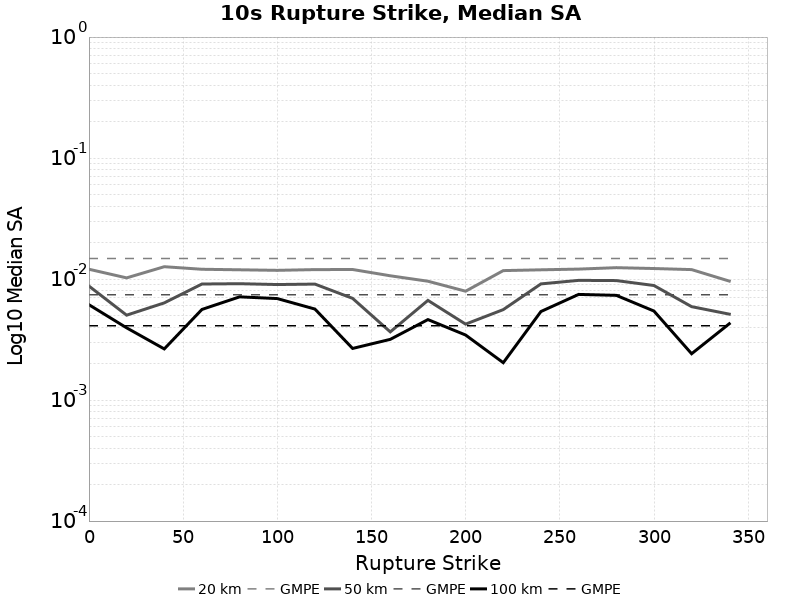 |
Here we attempt to reproduce the SCEC BroadBand Platform "Part B" validation exercise as defined in:
Goulet, C. A., Abrahamson, N. A., Somerville, P. G., & Wooddell, K. E. (2014). The SCEC broadband platform validation exercise: Methodology for code validation in the context of seismic‚Äêhazard analyses. Seismological Research Letters, 86(1), 17-26. (link)
The BBP exercise positioned sites in a 'racetrack' around the ruptures. Here, we instead position and rotate the ruptures around the site in order to work in 3-D with CyberShake reciprical calculations. Results for official scenarios and distances are in bold, results for additional magnitudes or distances not defined in the Goulet et. al. (2014) are italicised.
| Scenario | 20.0 km | 50.0 km | 100.0 km |
|---|---|---|---|
| M7.6 SS | (FAIL) | (FAIL) | (PASS) |
| 20.0 km | 50.0 km | 100.0 km |
|---|---|---|
 |  |  |
| Magnitude | Distance | Site | CSV File |
|---|---|---|---|
| M7.6 | 20.0 km | USC | sa_USC_m7.6_20.0km.csv.gz |
| M7.6 | 50.0 km | USC | sa_USC_m7.6_50.0km.csv.gz |
| M7.6 | 100.0 km | USC | sa_USC_m7.6_100.0km.csv.gz |